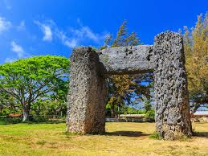

Ha'amonga
Haʻamonga 'a Maui: A massive stone trilithon built in the 13th century,when modern day tools were not yet available making this an engineering marvel. The Haʻamonga 'a Maui is often referred to as the "Stonehenge of the Pacific" and is believed to have served as a royal gateway or astronomical calendar.